EVERYTHING ELSE · 19–20 OCT
Every football screen now draws the pitch at the real match’s size, the engine warning is red, and the highlights rebuild, the free data and the scene editor moved on.
The 19 Oct work is on main (PR #744). The parts from 20 Oct (the touch fixes, the data credits and Real moment highlights, the scene studio, the 3D looks, the engine-warning fix) are on the Harry branch, not live.
19–20 Oct 2026. What is not on the team page or the admin page, and not a build of its own: the play screens and the drift audit, the highlights rebuild phases 0 to 2, the free data, the scene editor and the 3D audit. Short sections point to the builds that carried each topic on. In Admin → Patch notes this is v0.84.
CHECK THESE
FIXED
You said: “The game has definitely drifted when I press Play.” 8 screens drew the pitch narrower than the real match (366 px on a phone, 384 px on a computer).
Each page’s padding squeezed the play box. The kick strength was never off: every screen already read your drag against the real match. The pitch and the players were just drawn smaller.
The shared play box now steps into the page’s side margins by exactly the missing amount, without sideways scrolling. Also: the training card lost its 10 px padding, the Real goals card no longer clips the match’s edges, and the trial’s pitch frame border is a ring now (it ate 4 px).
Pitch width in px on a 390 px phone. Grey is before. Colour is after. The real match is 366 px wide.
The computer sizes (3 screens changed)
Pitch width in px on a computer. The real match is 384 px. The other screens were already 384.
On Infinite Highlights and Full match, NEXT and the chance name sat below the fold.
The page was taller than a phone screen.
They are pinned on screen at 390×844 and at 1440×900. This is now a house rule: play controls never sit below the fold.
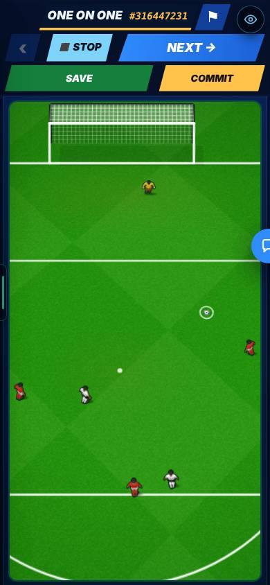
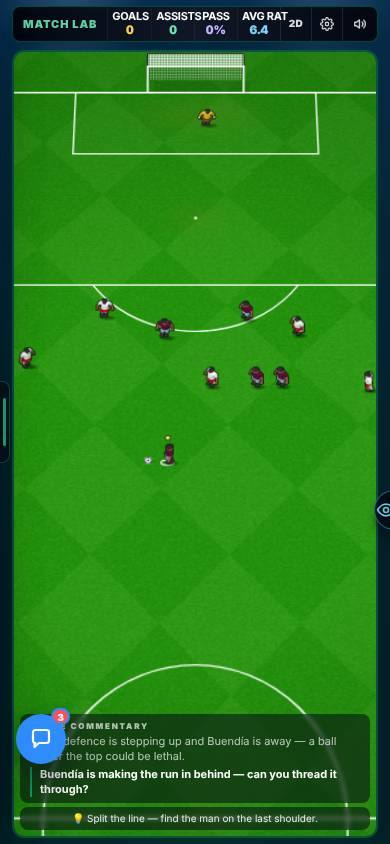
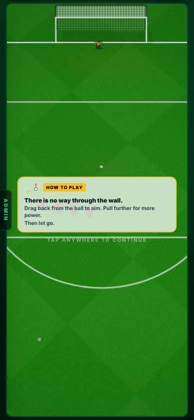
A read-only search with “2>/dev/null” in it made the red warning ask. That false alarm stalled a builder for 40 minutes (20 Oct).
Any “>” in a command counted as a write to the engine file the command also named. A “2>/dev/null” points at nothing.
A “>” now counts only when it points at an engine or drift file. Earlier on 20 Oct the check also learned to catch quoted file paths in scripts, after a Python script that edited the engine slipped past once. The warning still never blocks: you can press No.
You asked that anything a mouse does work at once with a finger. A check of every screen read the code and found 27 things: 10 in the real game, 9 on test pages, 5 on the website, 3 in the admin. 0 stop a finger in the real game. 2 stop a finger on the website.
Controls made for a mouse are small or wrong by touch. The one wrong one in the game: the − and + offer buttons in contract talks, where one tap could move the offer twice.
All 27 are built. Six were seen on a touch phone. The in-match mute, TOUCH and Power buttons are finger-sized (mute at least 40 px wide, the other two at least 36 px tall) after your OK, size only. The 4 old failing tests pass too, with the limits not loosened.

Full detail, with every picture: the B1 Touch Fixes page (v0.66). It has the other five seen fixes, the four old tests and Wembley.
The 19 Oct look-over of every screen found phone problems on the website games and in two screens of the career.
Not in the report.
- Ten-A-Ball shows its question and keeps the answer box on screen.
- Tic-tac-toe: GUESS stays in its box, and long square rules no longer cover the count.
- Tierlist: the tier sheet is on one row, with readable names.
- The Objectives pop-up stays off the Sign in button on phones.
- PL Draft: the season-end table drops the “played” column on phones, so club names fit.
- A 3D signing that throws falls back to the drawn one, and the error page shows what broke.
ADDED
The ruler records today’s numbers (chances, goals, reactions), so every later phase must keep them, or say why they changed.
A new Settings row: Full highlights rebuild: Off | On (test). Off is today’s game exactly. On also turns on “Chances: New”. The ruler is the test page /star-fhr-dev. You said: no admin page of its own, just a toggle, with a small “?” that explains it, shown to everyone for now.
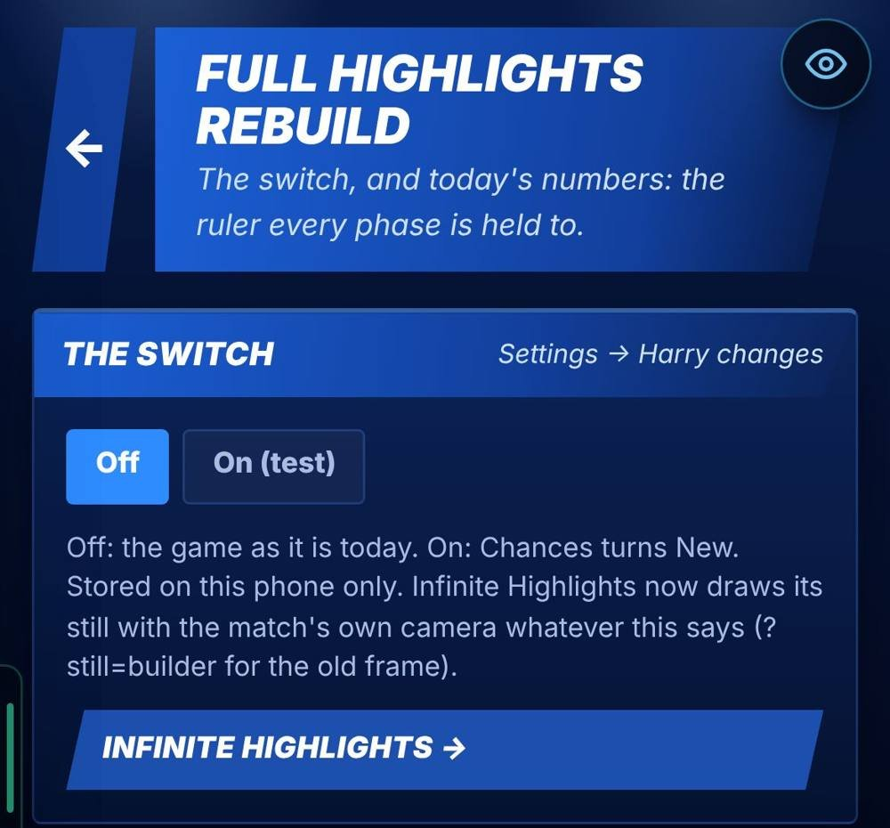
You asked (answer 13) that Infinite Highlights and Infinite Match play build-ups, “automatic and natural, with some adjusting”.
With the switch On, each open-play chance starts with a 4 to 8 second build-up. It is different every time and ends exactly on the drawn chance. The moves come from real attacking patterns in the free match data. Better passers play the long balls. Better dribblers make the runs. Your rule (answer 14): generated build-ups must never write over Mikey’s hand-checked scenarios, so generated is a separate layer.
Chances and goals per match did not change over 500 matches (5.81 and 2.31).

The real-football pages used StatsBomb data, and its licence does not allow a paid game.
A paid game needs data whose licence allows it.
Four free-licence sources were reduced to pattern files the game can read. Each needs a credit line shown in the game (done on 20 Oct, in Settings). Every StatsBomb file is deleted from the repo.
2,104 matches in all on 19 Oct, every source free to use in a paid game.
The three pages used StatsBomb data. Same licence problem.
- Real moments: 702 fully real moments (581 shots, 121 corners), all 22 players where they really stood. One Play button instead of one on every row (you kept it: A-6).
- Real shots: 2,875 real shots (2018 World Cup and Euro 2016). The strike and the result are real. The defenders are placed by our own rules. You called the shot map “pretty cool”.
- Real Goals: 232 levels.
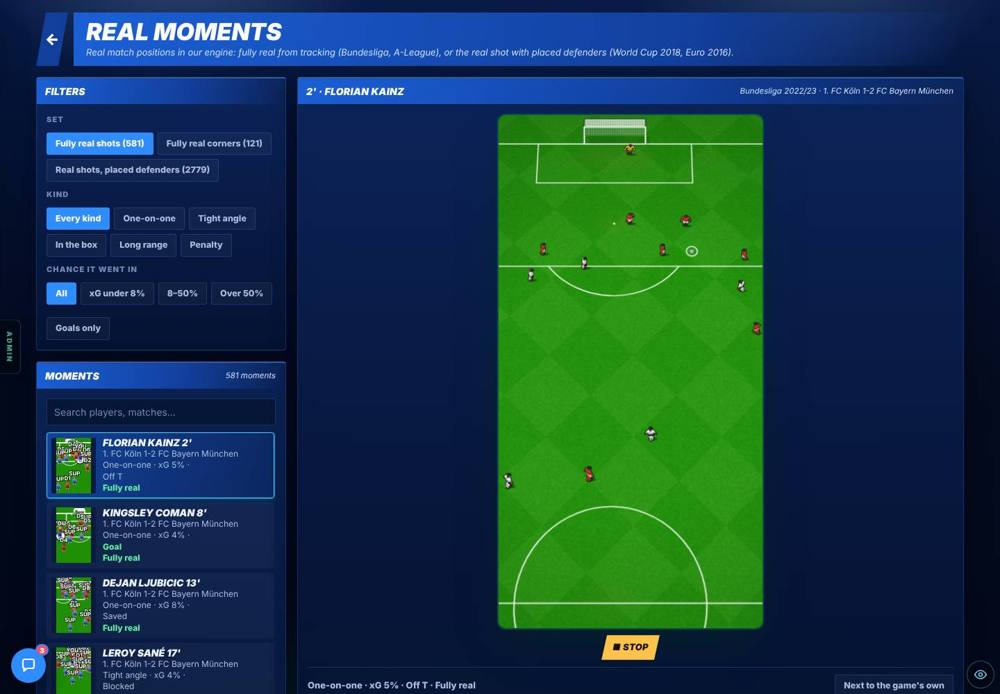
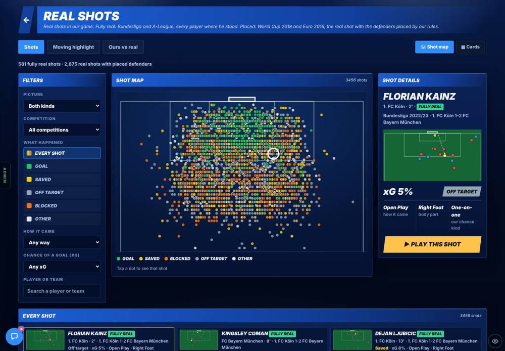
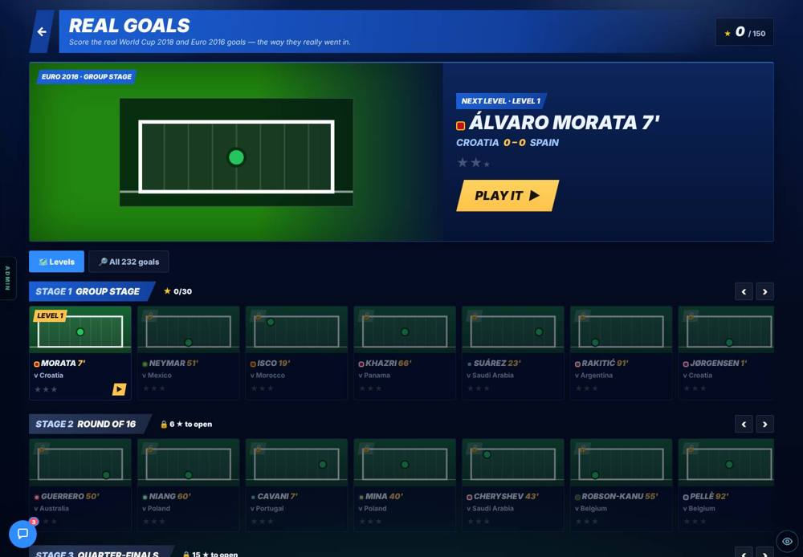
More pictures (2): the two pages on a phone
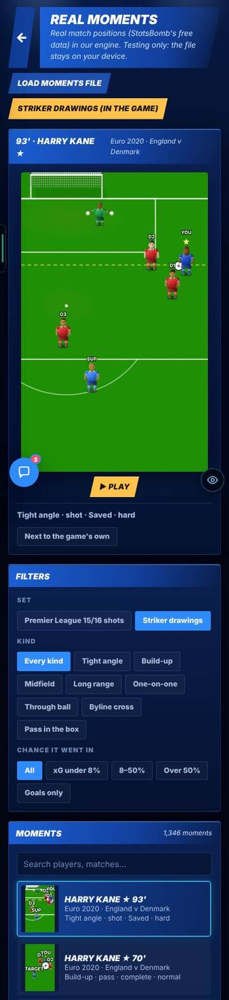
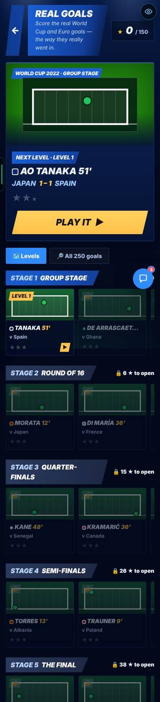
You said (19 Oct): there must be more than 2,104 matches, and remove Afriskaut (“no one’s heard of them”). Credits go in Settings. Real moments should feed the real game, inside the highlights switch.
A paid game needs credit lines and free licences. Real moments only ran on a test page.
Afriskaut is gone. SoccerTrack v2 (CC BY 4.0, 6 of 10 matches) and SkillCorner first release (MIT, 9 matches) are in. Settings → More → Data credits has 8 lines. Settings → Full highlights rebuild → Real moment highlights: Off | On: with it on, 1 in 4 open-play one-on-ones, tight angles and long-range chances becomes a real moment of the same kind, with the real 4 s build-up. A Real moments page marks each moment Use in game, Don’t use or Automatic. Raw downloads are deleted after use (1.2 GB for this build).
Tested over 120 matches: 24.5% of chances served as a real moment, the right kind 100% of the time. A moment marked “Don’t use” was served 0 times in 400.
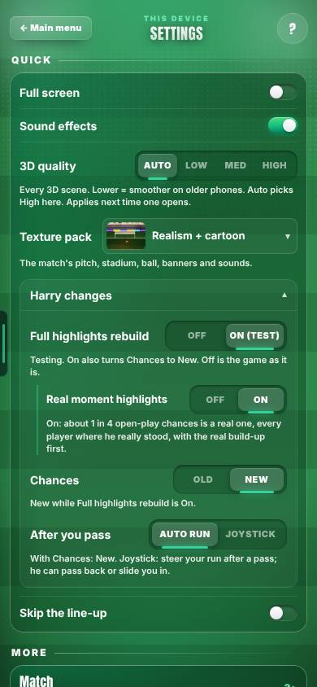
Full detail, with every picture: the B3 Real Data page (v0.67). It has a clip and the Real moments page.
You wanted to edit the 3D scenes without a coder. Steps 1 and 2 were already live: a free camera, a mini-map, the key light’s angle and colour, and Save.
Step 3a: the 3D Signing and the Manager’s Office now play live in the editor. You pick a shot and set its camera position and lens, the key light and the exposure. Play, Save and the shots fit on screen.
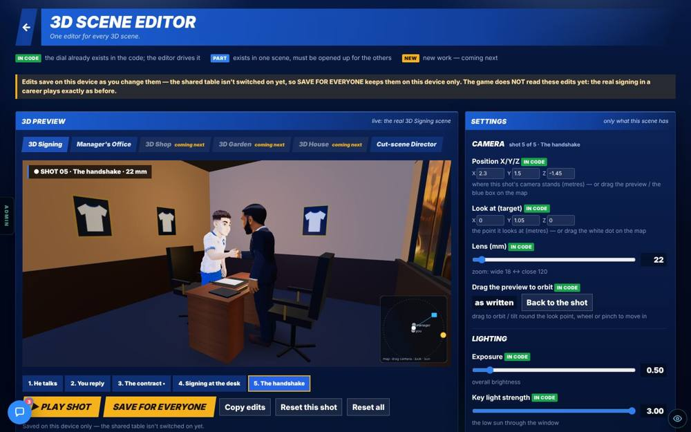
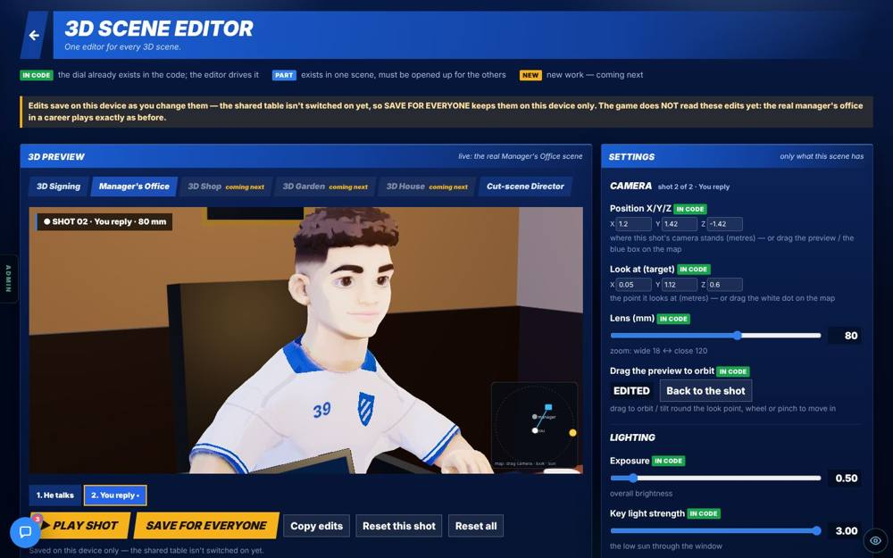
The edits did not reach the game. Save kept them on that device and in the team’s database. They did not go into the repo, and the game’s real cut scenes did not read them. You said: “I would love it to commit straight into the game” (3D-3).
The game keeps its own copy of approved edits as a file in its code. Nothing wrote to that file.
- The Shop, Garden and House edit live like Signing and the Office. No edit means the scene plays exactly as before.
- ✓ Approve, then choose Where (career, test page or both) and When (always, or one moment). The game reads only approved edits.
- Commit to game writes approved edits into the repo file on main. It needs an admin sign-in and a GITHUB_TOKEN. Each commit rebuilds the live site.
- A Scene generator page in the Studio tab: pick an event (18) and a feeling (12), press Generate, mark it Good or Bad, or keep it as a hand-made scene.
- “When does this play?”: 18 rows. All 18 say Not wired. You said (answer 31): “I just don’t know when they play and why, but we need to fix that.”
Measured: an approved office edit moved the office test camera. It was reverted after the test.

Full detail, with every picture: the B6 Scene Studio page (v0.70). It has the scene generator, the 18-row table and the six framed pages.
The 19 Oct audit, from 52 stills at phone size: skin turns yellow in cut scenes. 14 of 23 shots are framed for a wide screen and too tight on a phone. Faces never move. The home player stands stiffly. Props are held badly. The rooms are placeholders.
The models are mostly fine. The light, the cameras and the poses make it look cheap. Skin went yellow because the film-style tone mapping runs out of red first, and the warm colour grade added yellow on top.
A 10-phase plan, and you said go on phases 1 to 5 (“Fixing skin and light is very big”). B5 built them overnight: a bench page, natural skin, phone cameras that clear people, faces that blink and talk, and a Home player who is alive. The full audit is the “3D audit and plan” page: open it.
“Yellow” means skin past 36 degrees. Real player skin sits at 23 to 31 degrees. Grey is before (19 Oct). Colour is after.


Full detail, with every picture: the B5 3D Looks page (v0.69). It has two clips and every before and after.
You asked how the “made-up scenes” work. This is the answer.
Hand-made (6): signing, goal, trophy, walk-out, press and The Icon. Every move and shot is written by hand. They are the benchmark. Generated: made by the game from a game event, with nothing pre-built. The same event and the same number (the “seed”) always give the same scene. The real game does not play generated scenes yet. Five steps:
- The event. 18 kinds (signed, scored, won a trophy, injured, dropped, sacked, record broken, debut, walk-out, press conference, award, promoted, relegated, retired…), plus a feeling (12, such as joy or shock) and how big the moment is.
- The story. It picks a place, a mood and who is in it. Then it acts: setup, build, moment, reaction, aftermath, from 25 “beats”.
- The bodies. Each beat adds moves for each person: clips from the animation library, plus poses worked out by code.
- The camera. Film rules pick the shots: open on the place, go closer as feelings rise, never cross the line, show the reaction after the moment. Then it scores itself.
- The director. It plays the script in 3D, in any art style, frame by frame.
How well each made-up scene follows the film rules. Injured does not open on the place.

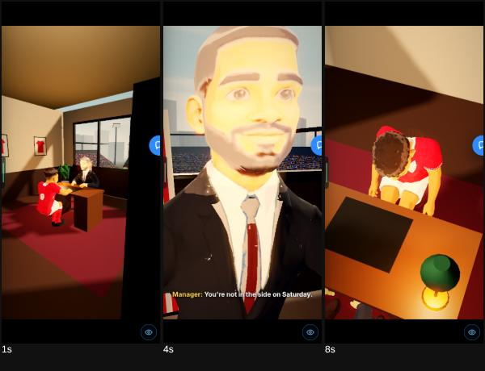
More pictures (2) and why bodies break
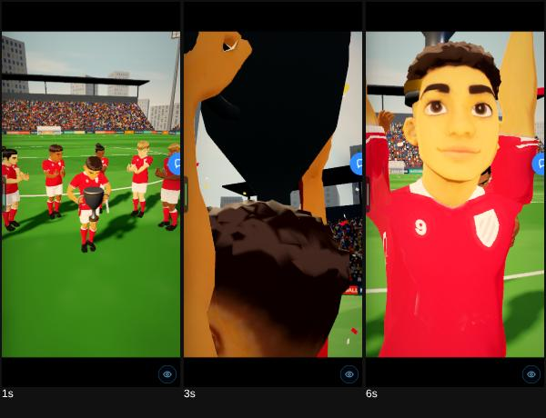

Why bodies break (reasoned from the code and the audit stills, not measured):
- A beat joins clips from different sources end to end, and code-made poses bend joints on top. When the two disagree, a shoulder twists or a boot floats.
- Walks move the body at a set speed that does not match the steps, so the feet slide.
- The people in them are a stand-in layer. A proper people layer (faces, hands, planted feet) plugs in at one place when it is ready.
CHANGED
The still before Play used a different camera from the real match, so pressing Play jumped.
The still was framed by its own camera, not the match’s.
With the switch On, the still is drawn with the match camera at exactly the match box’s size. 0 mismatches in 100.
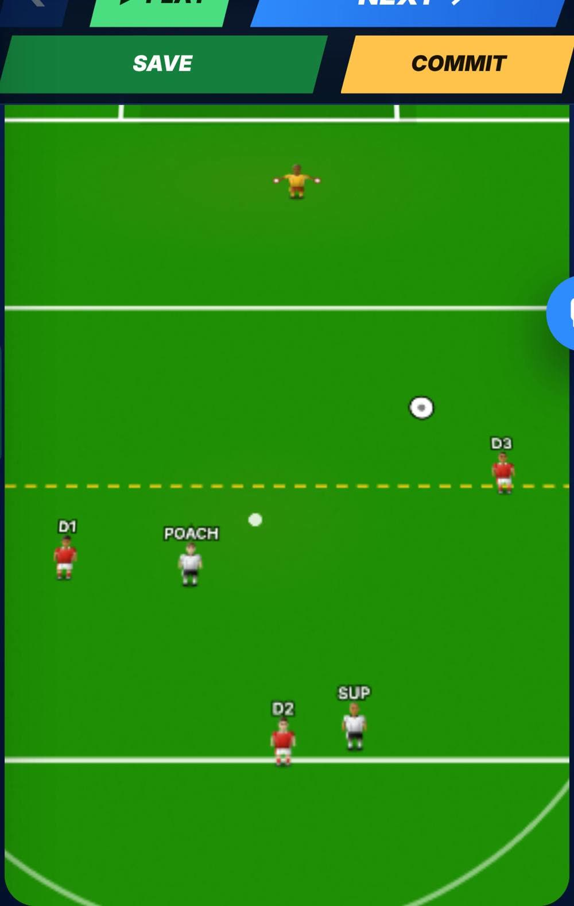
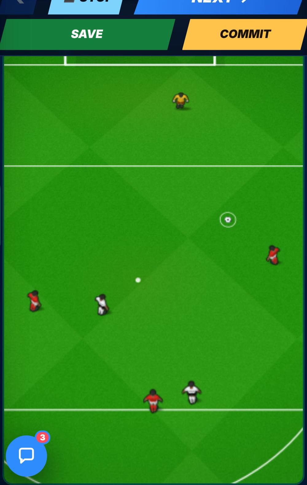
KNOWN ISSUES
Not driven end to end: the other Full match layout (“TV broadcast”), the 3D and radar views of the 90-minute test, the gallery’s 5-a-side and Tuning tabs, and the “Ours vs real” tab.
They mount the same play box or no match, so no new drift was expected.
Not measured. A real iPhone was not used either: the sizes are layout numbers, not feel.
Build-ups were seen on the test page and in the real match through the test page. Extra defenders running in during a build-up are not built yet.
Phase 2 sits behind the switch, which is Off by default.
Phase 3 (B2) is the next step.
Only 6 of the 10 matches loaded.
Google Drive refused the other 4.
Re-run later. Also: a Real moment was seen in Infinite Match, but not inside a career match.
All 18 “When does this play?” rows say Not wired. A real Commit to game was not seen. An approved edit playing in a real career was not seen.
You said generated scenes can go in the game for the moments that suit them. Nothing is wired until you pick. The test machine has no GITHUB_TOKEN.
Waiting on you: Q21 and Q22 on the Patch Notes Questions page.
NEXT
Three phases are done. Phase 3 is the next build (B2). The red engine warning will ask when it starts. B10 (headers and volleys), B14 (running after a chance) and B17 (a PC match layout) have no report yet: see the index’s Still building list.
- Phase 0: the switch and the ruler.
- Phase 1: the still uses the match camera.
- Phase 2: generated build-ups before open-play chances.
- Phase 3: players already moving when your chance starts. You said go, and you said the engine edit is OK, one build at a time. It is build B2. No report yet.
- Phases 4 to 7: the full 22-player match model. You said: decide later, after phase 3.
HOUSE RULES AND OTHER
House rules added in these two days (from the git log)
- Play controls never sit below the fold. (A house-style ruling, 19 Oct.)
- A new admin page must use the frame. The build stops the deploy if it does not.
- The engine and drift warning is red and asks every time. It never blocks.
- No forced new chat. A nudge every 3 hours instead (20 Oct).
- Delete raw downloaded data after use. The rule is in data/opendata/README.md.
- Check artifact pages at 390 px. Grid children get min-width 0 (18 Oct).
Also shipped, covered on Mikey’s own page
Mikey’s transfer window fixes of 19 Oct are on his v0.17 page (v0.59): the transfer fee is priced by your league (a non-league striker no longer shows ★406m), the window shows next season’s leagues with promoted and relegated clubs marked, and talks are in weekly wages. Commit titles only; not seen here.
THE NUMBERS
The numbers, if you want them
Pitch width on a phone (grey before, colour after), 8 screens to the real match’s 366 px.
Pitch width in px on a 390 px phone. Grey is before. Colour is after. The real match is 366 px wide.
Highlights rebuild. Over 500 matches: 5.81 chances and 2.31 goals, the same On and Off. 2,527 build-ups made, 2,197 took different routes, median 6.4 s, top speed 8.7 m/s, 0 of 448 failed the checks, 48 checked by eye. The still: 0 mismatches in 100.
Free data. Matches by source: Wyscout 1,941, Afriskaut 136 (removed), SkillCorner 20, IDSSE / DFL 7. 702 real moments (581 shots, 121 corners), 2,875 real shots, 232 Real Goals levels. After B3: 1,983 matches, 926 fully real moments, 93 real goals.
Scene editor. Made-up scenes (film-rules score): Scored 100%, Sacked 100%, Won trophy 100%, Injured 91%. Length 6.5 to 10.1 s. 3 to 7 shots each. An approved office edit moved the test camera from 44° to 19.4°.
3D audit. 52 stills. 14 of 23 shots too tight on a phone. Skin that is yellow: signing 94% → 0%, press 94% → 0.2%, walk-out 61% → 0%.
Touch check. 27 found: 10 in the real game, 9 on test pages, 5 on the website, 3 in the admin.
VIDEOS
These are sizes, switches and stills. B3, B5 and B6 have their own clips and stills on their pages.
- B3 Real Data has a clip of a real moment in Infinite Match.
- B5 3D Looks has two clips (the mentor scene and the Home player).
SEEN / NOT SEEN
Seen on a screen
- Pitch widths on 15 screens at 390 and 1440 px (layout measurements in Chromium)
- The play buttons staying on screen on three screens
- The switch and the ruler on /star-fhr-dev; the still and the frame after Play; 8 build-ups from the sheet
- Real moments, Real shots and Real Goals on the new data (stills from the build)
- Data credits, the two switches, the Real moments page (B3)
- The editor on Signing and the office, and the Shop, Garden and House; the Approve panel; the “no token” message (B6)
- Four generated scenes (scored, sacked, trophy, injured) on the test pages; before and after skin on the bench page (B5)
- Six touch fixes on a touch phone (B1)
Measured (numbers)
- Widths before and after for 8 screens (see the bars)
- 0 mismatches in 100 (the still); 500 matches: chances and goals unchanged (5.81 and 2.31); 2,197 of 2,527 build-ups took different routes; 0 of 448 failed the checks
- 2,104 matches by source; 702 real moments; 2,875 real shots; 232 Real Goals levels; then 1,983 matches and 926 real moments (B3)
- Film-rules scores of four generated scenes: 100, 100, 100, 91
- The 3D audit: 14 of 23 shots too tight on a phone; skin that is yellow 94% → 0% (B5)
- An approved office edit moved the test camera 44° → 19.4° (B6)
Reasoned, not seen
- The touch check: read from the code, not played
- The red warning is shown by the code and the commit, not by a screen: it appears in the Allow box inside a Claude session
- Why bodies break in generated scenes
- The small website fixes and the signing fallback: from the commit titles
Not seen / not done
- A real iPhone (this machine has no graphics chip)
- How a kick feels after the size fix
- A generated build-up inside a real career match (test page only)
- A real Commit to game into the repo (no token on the test machine)
- Any generated scene playing in the career (none is wired)
- A real moment inside a career match